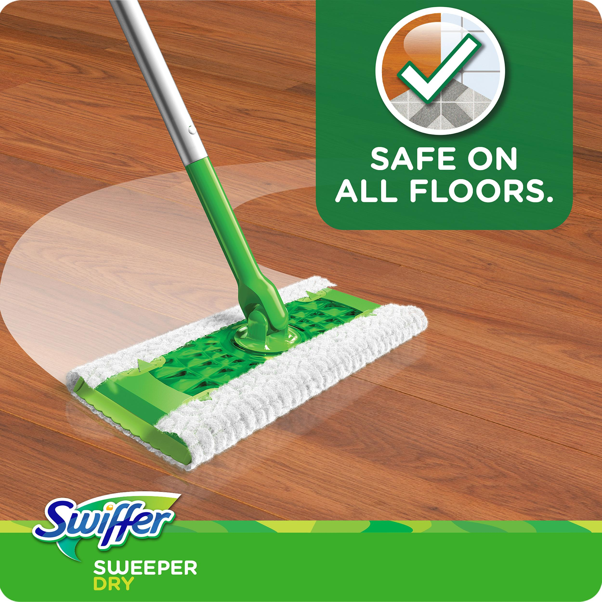

Many linguists speak more than one language, but…
We’re interested in how ‘Language’ works for humans
Learning languages can be a part of that, but it’s not the whole!
… but we have a problem …
How did I make that sequence of sounds and how did you recognize it?
Why is there a [t] at the end of quack rather than a [d]?
What does that last sound mean anyways?
Who quacked at whom? When? How do we know?
What was gleeful?
Is the duck single? Happy?
What’s a ‘bae’ anyways? Can a duck have a bae?
“How does talking work?” - Phonetics
“How do sounds change when we combine them?” - Phonology
“How do we build words?” - Morphology
“How do we combine words into sentences?” - Syntax
“What does it all mean?” - Semantics and Pragmatics
Plus language acquisition, social factors in language, language in the brain and more!
How can we describe how people communicate using language?
How can we describe the things people don’t do when using language?
What are the most accurate models to help us understand language?
What are the models which best mirror our own cognition?
How does language change over time?
How do languages generally accomplish communicative goals?
Are there patterns across the world?
What kinds of things are languages more and less likely to do?
Are there universal tendencies in language?
Studying speech and articulation using sound and physical measurements
Studying speech and sentence processing using eyetracking
Studying language in the brain using EEG, FMRI, and more!
Studying all sorts of elements of language using behavioral experiments

How do we make computers understand human language?
How do we use computers to process linguistic data?
How can we interact with computers using human language?
What can insights from language data provide for the world?
How can we process, understand, and summarize language data?
How can we integrate natural language responses into other datastreams?
What can we learn about the people giving us data, from the language they use?
How can we make strong claims about authorship?
What can we understand about a person from their language alone
Can we use voice and language to identify people?
How similar is ‘similar’ in language?

What words are used in English?
What do they mean?
Where did they come from?